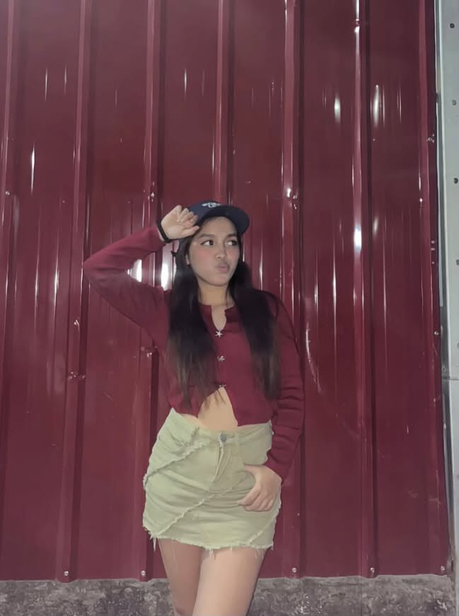
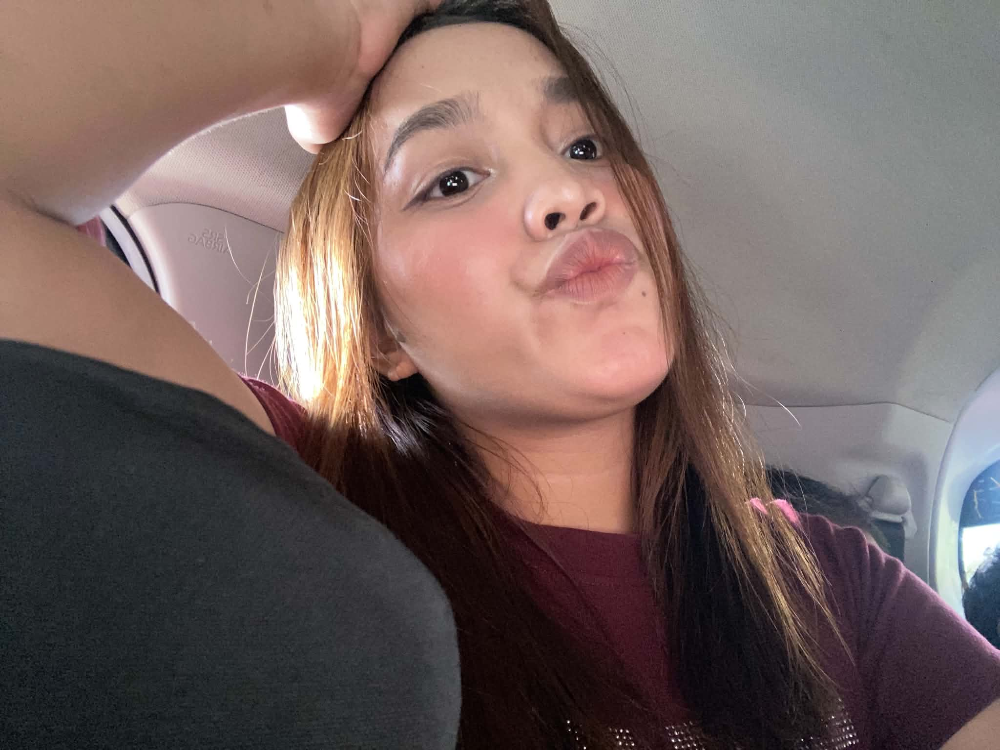
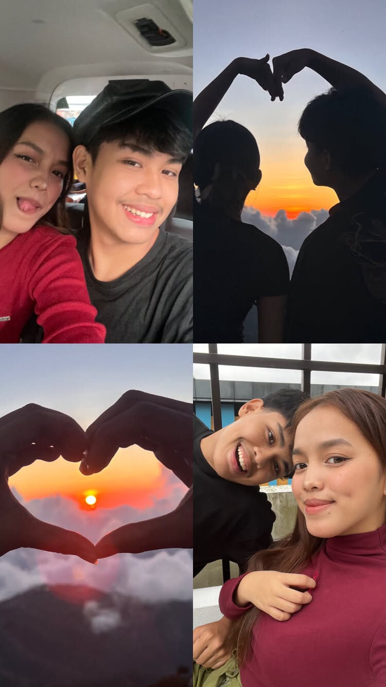
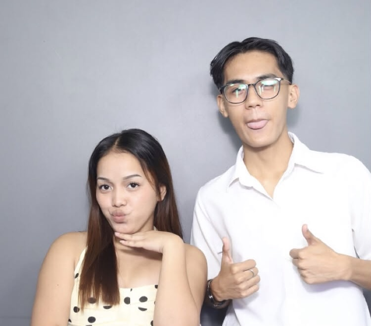
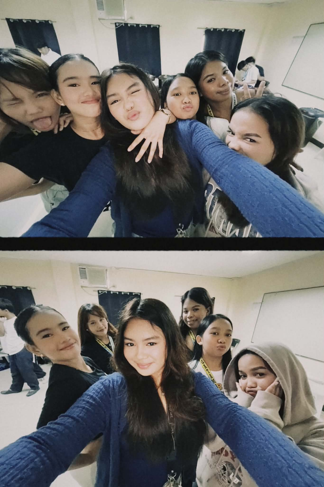

Profile

Building my future, one step at a time.
Hello! I’m Sandara Bachinela Florano, a Grade 12 ABM student at Datamex College of Saint Adeline. Welcome to my little corner where I share my journey, what inspires me, and the dreams I’m working toward. 💖
About

FLORANO, SANDARA BACHINELA | 12‑ABM | Senior High School student · Datamex College of Saint Adeline
My Story
I am Sandara Bachinela Florano, 22 years old, and the youngest in my family. Growing up, I’ve seen my family do their best for us—and that inspires me to do my very best too.
My biggest goal is to finish my studies and become a doctor someday. I want to make my family proud, give back to them, and help those in need. No matter how hard it gets, I will keep going because this dream is worth fighting for. ✨
My Interest
In my free time, I love playing volleyball and badminton — they keep me active and happy. I also enjoy playing mobile games to relax, and I really love watching K‑Dramas because they inspire me and tell such beautiful stories. These hobbies bring joy and balance to my life. 🎀❤️
My Direction
My goal is to complete my education and keep improving myself so I’m ready for every opportunity that comes my way.
My Beloved

MY LOVE 😻💘

10/10 ✨❤️

MY BESTIEEE 🌸🫶🏻

BABYGIRLS ❤️
Achievements
BOHOL 🥹💚
Nothing beats the feeling of being back in nature! We visited Bohol and went hiking through its beautiful mountains. It was pure joy - because exploring mountains has always been my favorite thing to do. Every step, every fresh breeze, and every amazing view made my heart so full. Thankful for this beautiful experience and for getting to see such wonderful places. Bohol you were amazing! 💚⛰️
BENGUET (Video 1) 🌲✨
Benguet stole my heart! The mountains were majestic, and the cold fresh air was so calming. 🏔️💙
BENGUET (Video 2) 🏔️💙
It felt like stepping into a painting — so peaceful and so beautiful. Can't wait to go back!
Skills & Strengths
What I’ve learned and improved through effort and working with others.
- Communication
- Determination & Hard Work
- Teamwork
- Adaptability
- Patience & Empathy
- Time Management
Works
Poem: The Future Begins With Me
I dream to be a nurse someday, helping sick people in every way...
Poem Video Presentation:
Reflection: I was inspired to write this poem because I want to become a nurse someday and help sick people take care of themselves. It reminds me to never give up.
Short Story: The Weight No One Sees
Main Character: Clara Vance (17 years old)
Theme & Message: Hope, strength, and the importance of asking for help. People do not have to face their problems alone.
Reflection: My story was inspired by people who experience poverty while silently struggling with their mental health. Asking for help is not a sign of weakness.
Literary Analysis Essay: When Hope Begins
An analysis of “The Small Lamp” focusing on Daniel's perseverance, the symbolism of darkness and light, and how education and small efforts can start a big change in our lives.
Reflection Journal
Title: Pushing Away the Big Rocks in My Life
Lesson learned: Problems are not there to stop us, but to give us a chance to grow and become better. As a student, I will manage my time well, stop making excuses, and keep moving forward.
My Journey
"But those who hope in the LORD will renew their strength. They will soar on wings like eagles; they will run and not grow weary, they will walk and not be faint." — Isaiah 40:31
My Senior High School journey began when I stepped into Grade 11, not knowing exactly what to expect. Now, I am proudly in Grade 12, standing closer to the finish line, more disciplined, patient, and determined than ever before. This is just the beginning of everything I am meant to be! 🫶🏻😻
Contacts
"Let all that you do be done in love." — 1 Corinthians 16:14
📍 Aniban 2, Tabing Ilog, Bacoor, Cavite
📧 sandaraflorano18@gmail.com
📱 0946‑565‑5722
📸 Instagram: Theycallme_ayani
📘 Facebook: Yang Yang
🎵 TikTok: Jendeuk